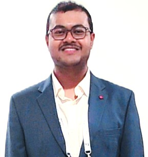

Dr. Ratnadeep Pramanik
Postdoctoral Researcher
Institut für Mathematik und Computergestützte Simulation, Universität der Bundeswehr München · Munich, Germany
Research Interests
Publications
-
V.K. Gopalakrishnan, R. Pramanik, A. Arockiarajan (2025). Unified rheological modeling using fractal calculus for soft biological matter. Materials & Design 258, 114572. https://doi.org/10.1016/j.matdes.2025.114572
-
R. Pramanik, M. Park, Z. Ren, M. Sitti, R. Verstappen, P.R. Onck (2025). Computational and experimental design of fast and versatile magnetic soft robotic low Re swimmers. Extreme Mechanics Letters 78, 102358. https://doi.org/10.1016/j.eml.2025.102358
-
R. Pramanik, R.W.C.P. Verstappen, P.R. Onck (2025). Emerging spatiotemporal patterns and collective swimming of magnetically actuated soft robots. Nonlinear Dynamics. https://doi.org/10.1007/s11071-025-11353-3
-
P. Narayanan, R. Pramanik, A. Arockiarajan (2025). Leveraging Instabilities in Multifunctional Soft Materials: A Cutting Edge Review. Advanced Engineering Materials. https://doi.org/10.1002/adem.202500125
-
J.M. Chandra Hasa, P. Narayanan, R. Pramanik, A. Arockiarajan (2025). Harnessing machine learning algorithms for the prediction and optimization of various properties of polylactic acid in biomedical use: a comprehensive review. Biomedical Materials. https://doi.org/10.1088/1748-605X/ada840
-
R. Pramanik, R.W.C.P. Verstappen, P.R. Onck (2024). Computational fluid–structure interaction in biology and soft robots: A review. Physics of Fluids 36(10), 101302. https://doi.org/10.1063/5.0226743
-
R. Pramanik, R.W.C.P. Verstappen, P.R. Onck (2024). Nature-inspired miniaturized magnetic soft robotic swimmers. Applied Physics Reviews 11(2), 021312. https://doi.org/10.1063/5.0189185
-
P. Narayanan, R. Pramanik, A. Arockiarajan (2024). Hard magnetics and soft materials — a synergy. Smart Materials and Structures 33, 043001. https://doi.org/10.1088/1361-665X/ad2bd8
-
P. Narayanan, R. Pramanik, A. Arockiarajan (2023). Micromechanics-based constitutive modeling of hard-magnetic soft materials. Mechanics of Materials 184, 104722. https://doi.org/10.1016/j.mechmat.2023.104722
-
P. Narayanan, R. Pramanik, A. Arockiarajan (2023). A hyperelastic viscoplastic damage model for large deformation mechanics of rate-dependent soft materials. European Journal of Mechanics A/Solids 98, 104874. https://doi.org/10.1016/j.euromechsol.2022.104874
-
R. Pramanik, R. Verstappen, P.R. Onck (2023). Magnetic-field-induced propulsion of jellyfish-inspired soft robotic swimmers. Physical Review E 107(1), 014607. https://doi.org/10.1103/PhysRevE.107.014607
-
R. Pramanik, F. Soni, K. Shanmuganathan, A. Arockiarajan (2022). Mechanics of soft polymeric materials using a fractal viscoelastic model. Mechanics of Time-Dependent Materials 26, 257–270. https://doi.org/10.1007/s11043-021-09486-0
-
R. Pramanik, A. Arockiarajan (2022). Mechanical and morphological characterization of a novel silk/cellulose-based soft composite. Materials Letters 314, 131871. https://doi.org/10.1016/j.matlet.2022.131871
-
R. Pramanik, P.R. Onck, R.W.C.P. Verstappen (2021). Bi-directional locomotion of a magnetically-actuated jellyfish-inspired soft robot. Advances in Robotics (ACM-TRS 2021). https://doi.org/10.1145/3478586.3478591
-
F. Ram, P. Kaviraj, R. Pramanik, A. Krishnan, K. Shanmuganathan, A. Arockiarajan (2020). PVDF/BaTiO3 films with nanocellulose impregnation: Investigation of structural, morphological and mechanical properties. Journal of Alloys and Compounds 823, 153701. https://doi.org/10.1016/j.jallcom.2020.153701
-
R. Pramanik, A. Narayanan, A. Rajan, S. Konar, A. Arockiarajan (2019). Transversely isotropic freeze-dried PVA hydrogels: Theoretical modelling and experimental characterization. International Journal of Engineering Science 144, 103144. https://doi.org/10.1016/j.ijengsci.2019.103144
-
R. Pramanik, A. Arockiarajan (2019). Effective properties and nonlinearities in 1–3 piezocomposites: a comprehensive review. Smart Materials and Structures 28(10), 103001. https://doi.org/10.1088/1361-665X/ab350a
-
R. Pramanik, L. Santhosh, A. Arockiarajan (2019). Mechanics of 1–3 piezocomposites subjected to creep–fatigue loads. Meccanica 54, 1611–1622. https://doi.org/10.1007/s11012-019-01035-x
-
A. Narayanan, A. Rajan, R. Pramanik, A. Arockiarajan (2019). A thermodynamically-consistent phenomenological viscoplastic model for hydrogels. Materials Research Express 6(8), 085418. https://doi.org/10.1088/2053-1591/ab2a49
-
A. Rajan, A. Narayanan, R. Pramanik, A. Arockiarajan (2019). Mechanics of viscoelastic buckling in slender hydrogels. Materials Research Express 6(5), 055320. https://doi.org/10.1088/2053-1591/ab0691
-
R. Pramanik, A. Arockiarajan (2019). Influence of nanocellulose on mechanics and morphology of polyvinyl alcohol xerogels. Journal of the Mechanical Behavior of Biomedical Materials 90, 275–283. https://doi.org/10.1016/j.jmbbm.2018.10.024
-
R. Pramanik, B. Ganivada, F. Ram, K. Shanmuganathan, A. Arockiarajan (2019). Influence of mechanical compressive loads on microstructurally aligned PVA xerogels. Materials Letters 236, 222–224. https://doi.org/10.1016/j.matlet.2018.10.073
-
P. Kaviraj, R. Pramanik, A. Arockiarajan (2019). Influence of individual phases and temperature on properties of CoFe2O4-BaTiO3 magnetoelectric core-shell nanocomposites. Ceramics International 45(9), 12344–12352. https://doi.org/10.1016/j.ceramint.2019.03.153
-
R. Pramanik, M.K. Sahukar, Y. Mohan, B. Praveenkumar, S.R. Sangawar, et al. (2019). Effect of grain size on piezoelectric, ferroelectric and dielectric properties of PMN-PT ceramics. Ceramics International 45(5), 5731–5742. https://doi.org/10.1016/j.ceramint.2018.12.039
-
R. Pramanik, A. Arockiarajan (2019). A hybrid phenomenological model for thermo-mechano-electrical creep of 1–3 piezocomposites. Philosophical Magazine 99(1), 1–21. https://doi.org/10.1080/14786435.2018.1526417
-
R. Pramanik, A. Arockiarajan (2018). Experimental and theoretical studies on mechanical creep of 1–3 piezocomposites. Acta Mechanica 229, 4187–4198. https://doi.org/10.1007/s00707-018-2209-0
-
R. Pramanik, A. Arockiarajan (2018). Electro-mechanical creep of 1–3 piezocomposites: Theoretical modeling and experimental approach. Ceramics International 44(12), 13934–13943. https://doi.org/10.1016/j.ceramint.2018.04.242
-
B. Sikder, R. Pramanik, A. Chanda (2017). Effect of annealing on the fracture behavior of LSCFO, a potential energy material for oxygen separation. Materialwissenschaft und Werkstofftechnik 48, 726–730. https://doi.org/10.1002/mawe.201600739
For a complete list, see Google Scholar or ORCID.
Conferences
Supervision
Education
-
Postdoc, Fakultät für Bauingenieurwesen und UmweltwissenschaftenUniversität der Bundeswehr München2025–presentProject: Contact mechanics and fluid-structure interaction of endovascular devices for brain aneurysmsInstitutsleitung: Prof. Alexander Popp
-
Ph.D., Faculty of Science & EngineeringUniversity of Groningen2020–2024Project: Nature-inspired magnetic soft robotic swimmers and swarmsECTS: 53 (minimum required: 30)Supervisors: Prof. Roel W.C.P. Verstappen & Prof. Patrick R. Onck
-
M.S. (Applied Mechanics)Indian Institute of Technology Madras2017–2019Project: Experimental characterization on creep behavior of 1–3 piezocompositesCGPA: 9.64 / 10Supervisor: Prof. A. Arockiarajan
-
B.E. (Mechanical Engineering)Jadavpur University2012–2016Project: Mechanics of viscoelastic structures undergoing complex kinematicsCGPA: 8.97 / 10Supervisors: Prof. A. Nandi & Prof. S. Neogy
Reviewing
Contact
Please feel free to reach out for research collaborations, supervision, and invited talks.